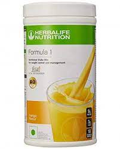
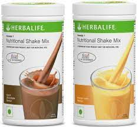
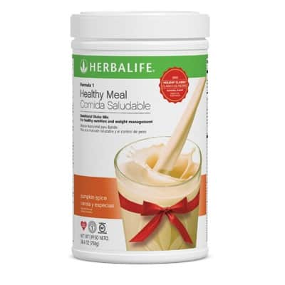

nutritiona shake
You should use the shake to replace 1 or 2 meals per day. If you want to lose weight, you should replace 2, if you are just looking to manage your weight, replace just 1. We recommend taking the shake for breakfast, as breakfast is the most important meal of the day and to a large extent determines how you feel and what you eat during the day. You can then replace either lunch or dinner with another shake, according to your schedule and preferences.



DESCRIPTION
Your best friend when it comes to weight loss. 1-minute preparation, low calories, high in proteins, nutrients and vitamins. The Herbalife Formula 1 shake has been the mainstay of the company – and of countless successful diets – for more than 30 years.
PRICE: R520
STOCK AVAILIBILITY: 300Products
PRODUCT SIZE: 720g
PACKAGE TYPE: Box